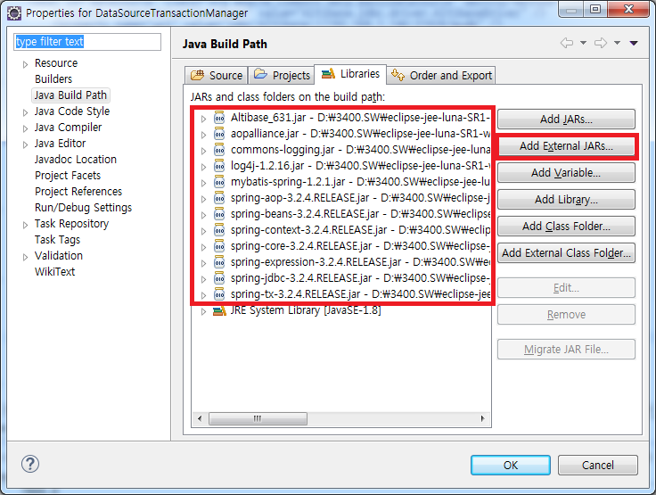
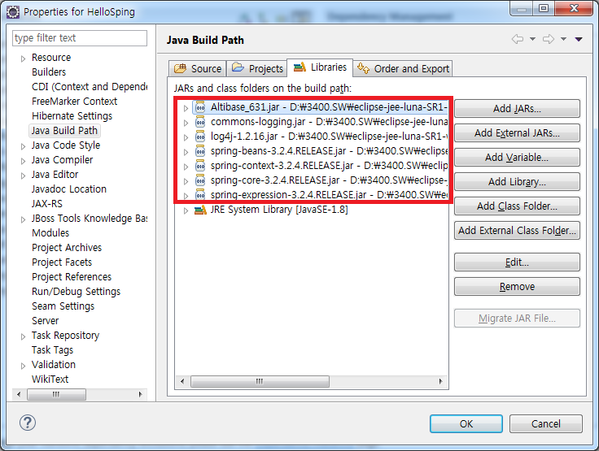

In order to integrate with DB in Spring, DataSource related bean must be configured in the bean configuration file.
There is the method of using the DriverManagerDataSource provided by the Spring Framework, the method of using the DBCP provided by Jakarta, and the method of using the ConnectionPool provided by the DB vendor. This chapter describes how to integrate with Altibase using these methods.
Using DriverManagerDataSource
In the case of integrating with DB using DriverManagerDataSource class provided by Spring Framework, set class property value as org.springframework.jdbc.datasource.DriverManagerDataSource when setting dataSource bean in the bean configuration file.
At this time, various properties for integrating with DB can be defined in the dataSource bean. The following properties can be defined according to ALTIBASE.
Property | Description |
|---|---|
driverClassName | ALTIBASE JDBC driver class Name |
URL | Connection string information for connecting with ALTIBASE in the form of "jdbc:Altibase://IP:port_no/db_name"
|
username | Database account
|
password | Database password |
The following is a part of the acpplicationContext.xml file of DataManagerDataSourceConnection provided as an example. Ex) ApplicationManager.xml file of DataManageDataSourceConnection.
…
<bean id="dataSource"
class="org.springframework.jdbc.datasource.DriverManagerDataSource">
<!-- JDBC Driver class name setting -->
<property name="driverClassName" value="Altibase.jdbc.driver.AltibaseDriver" />
< <!-- connection url -->
<property name="url" value="jdbc:Altibase://192.168.1.35:21129/mydb" />
<!-- DB user account settings -->
<property name="username" value="sys" />
<!-- DB user password setting -->
<property name="password" value="manager" />
</bean>
…
To run the DataManagerDataSourceConnection project included in the example, Altibase.jar, spring.jar, spring-jdbc.jar, and common-loggings.jar files are needed, so add the corresponding jar files must be added.

Using DBCP
ConnectionPool based DataSource can be configured using DBCP (Jakarta Commons Database Connection Pool) API provided by Jakarta in the Spring. The DataSource class used at this time is org.apache.commons.dbcp.BasicDataSource. To set it up, use the BasicDataSource class in the applicationContext.xml file as in the DriverManagerDataSource class described above, and create a dataSource bean.
Ex) applicationContext.xml file of DBCPConnection
…
<bean id="dataSource" class="org.apache.commons.dbcp.BasicDataSource">
<!-- JDBC Driver class name setting -->
<property name="driverClassName" value="Altibase.jdbc.driver.AltibaseDriver" />
<!-- connection url -->
<property name="url" value="jdbc:Altibase://192.168.1.35:21129/mydb" />
<!-- DB user account setting -->
<property name="username" value="sys" />
<!-- DB user password setting -->
<property name="password" value="manager" />
</bean>
…
BasicDataSource class provides various properties to manage ConnectionPool.
Property | Description |
|---|---|
driverClassName | ALTIBASE JDBC driver class Name |
url | Connection string information for connecting with ALTIBASE in the form of "jdbc:Altibase://IP:port_no/db_name" |
username | Database account |
password | Database password |
maxActive | The maximum number of connections. 0 is unlimited. The default is 8. |
initialSize | The initial number of connections. The default is 0. |
maxIdle | The maximum number of connections that remain idle in the pool. The default is 8.
|
maxWait | The maximum connection attempt time (unit: millisec) -1 waits infinitely. The default is infinite waiting. |
validationQuery | SQL statement used to check connection validation |
defaultAutoCommit | Set autocommit mode. The default is true. |
defaultTransactionIsolation | Set Transaction Isolation level |
Using the ConnectionPool of ALTIBASE
If the user uses the ABConnecitonPoolData Source class provided by ALTIBASE, the user can use the ConnectionPool of ALTIBASE. Like other DataSource described previously, the user can define dataSource bean by using the ABConnectionPoolData Source class in applicationContext.xml.
Ex) applicationContext.xml file of AltibaseConnectionPool
… <bean id="dataSource" class="Altibase.jdbc.driver.AltibaseConnectionPoolDataSource"> <!-- Connection URL uppercase note --> <property name="URL" value="jdbc:Altibase://192.168.1.35:21129/mydb"/> <!-- DB user account setting --> <property name="user" value="sys"/> <!-- DB user password setting --> <property name="password" value="manager" /> </bean> …
When using the ABConnectionPoolData Source, ALTIBASE JDBC Driver class is automatically loaded from ABConnectionPoolData Source, so there is no need to specify the driverClassName property. In addition, it should be noted that the property representing the DB user account is a user, not a username.
Property | Description |
|---|---|
URL | Connection string information for connecting with ALTIBASE in the form of "jdbc:Altibase://IP:port_no/db_name" |
user | Database account |
password | Database password |
maxPoolSize | The maximum number of connections. The default is 10.
|
minPoolSize | The minimum number of connections. The default is 0. |
initialPoolSize | The initial number of connections. The default is 1. |
maxIdleTime | The idle waiting time |
propertyCycle | The wait time when ConnectionPool is full (millisec) |
To run AltibaseConnectionPool project included in the example, Altibase.jar, spring.jar, spring-jdbc.jar, and common-logging.jar files are required.

{kind=link}
{kind=link}
{kind=link}